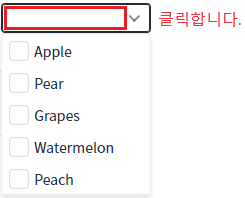
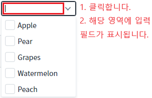
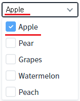
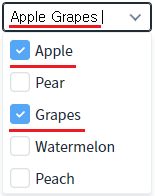
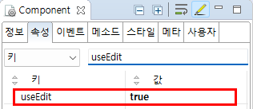

CheckCombobox의 'useEdit' 속성을 사용하여, 입력 필드에 사용자가 값을 입력하여 항목을 선택할 수 있도록 구현된 예제입니다.
기본
사용자의 입력을 허용하여 항목 선택하기
예제 영역 '(기본 설정) 키 입력 비활성화'에 구성된 CheckCombobox에서 테스트합니다. 선택된 항목이 표시되는 영역을 클릭하면 목록이 표시됩니다. (입력 필드가 표시되지 않습니다)
Image 1.브라우저(Chrome) 실행 예시 - 키 입력 불가 상태

예제 영역 '키 입력 활성화'에 구성된 CheckCombobox에서 테스트합니다.
1
STEP 1: 선택된 항목이 표시되는 영역을 클릭합니다.
선택된 항목이 표시되는 영역을 클릭하면 해당 영역에 입력 필드가 구성되고 목록이 표시됩니다.
Image 2.브라우저(Chrome) 실행 예시 - 키 입력 허용 상태

2
STEP 2: 항목과 동일한 값을 입력합니다.
입력 필드에 'Apple '(마지막 문자열은 공백)을 입력하면 항목 'Apple'이 선택됩니다. 입력 문자열 뒤에 빈 문자열(공백)은 선택된 항목간의 구분자입니다.
Image 3.브라우저(Chrome) 실행 예시 - 입력된 값이 선택된 상태

입력 필드에 'Apple Grapes '(마지막 문자열은 공백)을 입력하면 항목 'Apple'과 'Grapes'이 선택됩니다.
Image 4.브라우저(Chrome) 실행 예시

속성을 정의합니다.
[필수] useEdit="true"
[default : false, true] checkcombobox 값을 직접 타이핑하여 편집할 수 있는 기능을 제공합니다.
Image 5.웹스퀘어 스튜디오의 Component View 예시

Example 1.Source
<!-- CheckCombobox의 소스 본문 예시 --> <xf:checkcombobox useEdit="true"> <!-- 중략 --> </xf:checkcombobox>
useEdit